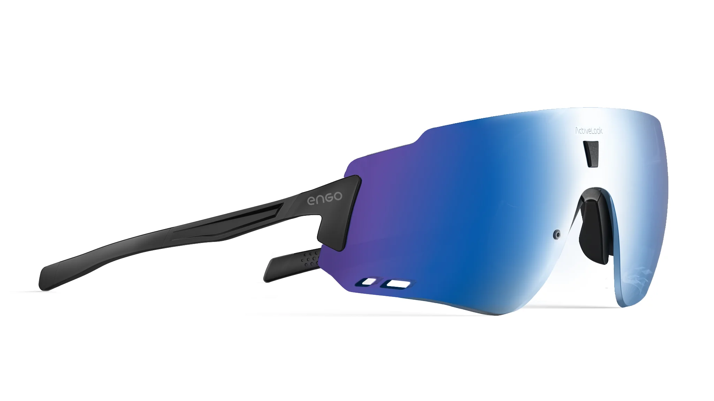

¿Qué es Engo 2?
El Engo 2 es un modelo de gafas inteligentes enfocadas para deportistas, como ciclistas o corredores. Estas gafas de realidad aumentada cuentan con una pantalla de visualización frontal (HUD) la cual ofrece información en tiempo real, permitiendo a los usuarios ver métricas como frecuencia cardiaca, ritmo, distancia entre muchos otros. Utiliza una tecnología ActiveLook la cual proyecta los datos mediante una pantalla micro-OLED capaz de adaptarse a diferentes niveles de iluminación, incluso la solar intensa. Tienen un peso de 36 a 41 gramos según el modelo, relativamente ligeros, además de ser cómodos y resistentes al agua y sudor, totalmente ideales para entrenamientos prolongados.
Otra ventaja de los Engo 2 es su control por gestos, permitiendo a los usuarios cambiar entre métricas con sólo mover la mano, manteniendo de esta forma la concentración en la actividad. En cuanto a su batería tiene una duración aproximada de unas 12 horas. Cabe destacar que tiene una fácil conectividad por Bluetooth Smart 4.2 entre dispositivos como Apple Watch, iPhone, Android, Garmin y Suunto.
En resumen, el uso de estas gafas amplía mucho los beneficios sobre la seguridad, ya que al no tener que apartar la vista del entorno, fomenta la concentración en la actividad a la vez de evitar bastantes distracciones que tienden lugar a accidentes.
Especificaciones técnicas
| Plataforma | ActiveLook |
| Tipo de dispositivo | HUD ligero/AR independiente |
| Pantalla | Monocular AMOLED simple |
| Diseño de subpíxeles | No tiene. monocromático, cada píxel tiene 16 niveles de brillo |
| Resolución | 304x256 por ojo |
| Peso | 36 g, pequeño 41 g, grande + 5 g por correa para la cabeza |
| Material | Plástico |
| Colores | Negro, azul |
| Puertos | Micro USB |
| Bluetooth | Bluetooth 4.2 LE |
| Duración batería | 12 horas |
| Tiempo de carga | 3 horas |
Evolución de las gafas inteligentes
Las gafas inteligentes hasta hoy en día han evolucionado significativamente desde su aparición en los años 60, tanto en funcionalidad como tecnología. Desde prototipos experimentales han pasado a ser dispositivos útiles y funcionales integrándose cada vez más en nuestra rutina.
En este caso Engo 2 son unas gafas orientadas al deporte, que permite al usuario realizar la actividad deportiva de una manera mucho más eficiente y segura. Sustituye a dispositivos tradicionales tales como los relojes deportivos, ciclo computadores y el móvil, ya que este permite seguir la actividad sin apartar la vista del campo visual lo que elimina la necesidad de mirar estos dispositivos.